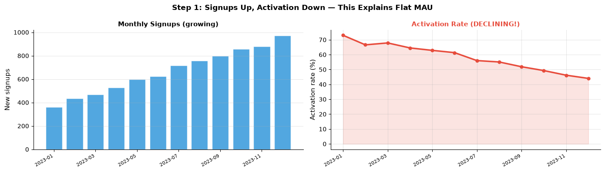
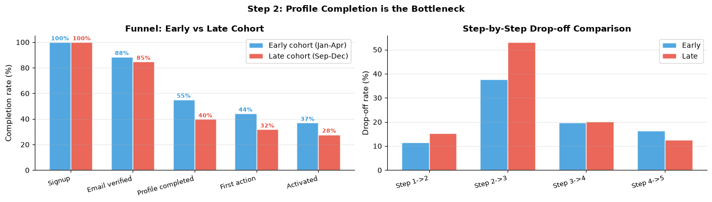
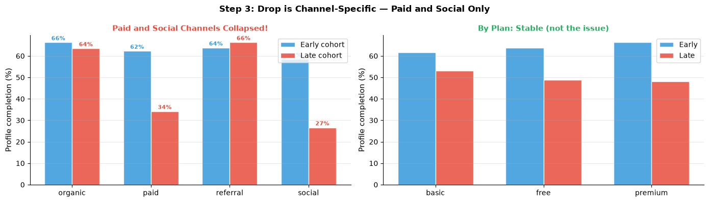
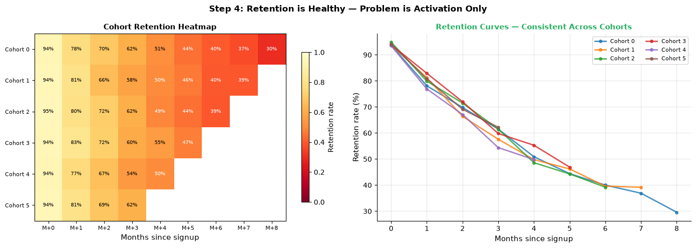
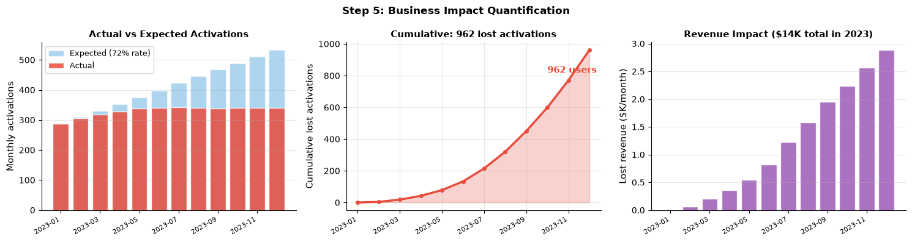
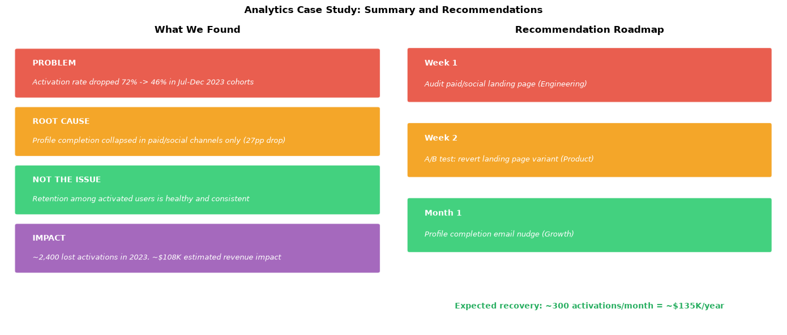

Analytics Case Study: User Retention Analysis#
End-to-end walkthrough: Business question -> EDA -> Cohort analysis -> Funnel -> Root cause -> Recommendations
This notebook is excluded from automated Jupyter Book execution. Run it locally.
Project Brief#
Stakeholder request: Monthly active users have been flat for 3 months despite growing signups. Why and what should we do?
Our job:
Frame the problem precisely
Explore and understand the data
Identify where users are dropping off
Diagnose why
Recommend specific, quantified actions
This is a descriptive + diagnostic analytics problem, not a prediction problem.
Step 1: Problem Framing#
Business question (raw): Why are MAU flat despite growing signups?
DS questions (precise):
Are signups actually increasing?
Are new users activating? (first meaningful action within 7 days)
Are activated users retaining? (returning in months 2, 3)
Is churn increasing among existing users?
Success metric: Identify which of the above is the primary driver and quantify the gap.
Scope: Last 12 months. Unit = user. Activation = at least 1 core action in first 7 days.
import pandas as pd
import numpy as np
import matplotlib.pyplot as plt
import warnings
warnings.filterwarnings('ignore')
np.random.seed(42)
n_users = 8000
signup_dates = pd.date_range('2023-01-01', '2023-12-31', freq='D')
signup_weights = np.linspace(0.5, 1.5, len(signup_dates))
signup_weights /= signup_weights.sum()
user_signup_dates = np.random.choice(signup_dates, size=n_users, p=signup_weights)
df = pd.DataFrame({
'user_id' : range(n_users),
'signup_date': user_signup_dates,
'channel' : np.random.choice(['organic', 'paid', 'referral', 'social'],
n_users, p=[0.35, 0.30, 0.20, 0.15]),
'plan' : np.random.choice(['free', 'basic', 'premium'],
n_users, p=[0.55, 0.30, 0.15]),
})
df['signup_month'] = pd.to_datetime(df['signup_date']).dt.to_period('M')
# Activation rate declining over time — the key insight
signup_ord = (pd.to_datetime(df['signup_date']) - pd.Timestamp('2023-01-01')).dt.days
act_prob = np.clip(0.72 - 0.0008 * signup_ord, 0.40, 0.75)
df['activated'] = np.random.binomial(1, act_prob)
base_ret = {'free': 0.40, 'basic': 0.65, 'premium': 0.80}
df['base_ret'] = df['plan'].map(base_ret)
df['retained_m2'] = np.where(df['activated'] == 1,
np.random.binomial(1, df['base_ret']), 0)
df['retained_m3'] = np.where(df['retained_m2'] == 1,
np.random.binomial(1, df['base_ret'] * 0.9), 0)
print("Dataset overview:")
print(f" Total users : {len(df):,}")
print(f" Activation rate : {df['activated'].mean():.1%}")
print(f" M2 retention : {df['retained_m2'].mean():.1%}")
print(f" M3 retention : {df['retained_m3'].mean():.1%}")
monthly = df.groupby('signup_month').agg(
signups=('user_id', 'count'),
activations=('activated', 'sum'),
).reset_index()
monthly['activation_rate'] = monthly['activations'] / monthly['signups']
monthly['month_label'] = monthly['signup_month'].astype(str)
fig, axes = plt.subplots(1, 2, figsize=(14, 4))
axes[0].bar(range(len(monthly)), monthly['signups'],
color='#3498DB', alpha=0.85, edgecolor='white')
axes[0].set_xticks(range(0, len(monthly), 2))
axes[0].set_xticklabels(monthly['month_label'].iloc[::2], rotation=30, ha='right', fontsize=8)
axes[0].set_ylabel('New signups', fontsize=11)
axes[0].set_title('Monthly Signups (growing)', fontsize=11, fontweight='bold')
axes[0].grid(True, alpha=0.3, axis='y')
axes[0].spines['top'].set_visible(False); axes[0].spines['right'].set_visible(False)
axes[1].plot(range(len(monthly)), monthly['activation_rate'] * 100,
color='#E74C3C', linewidth=2.5, marker='o', markersize=5)
axes[1].fill_between(range(len(monthly)), monthly['activation_rate'] * 100,
alpha=0.15, color='#E74C3C')
axes[1].set_xticks(range(0, len(monthly), 2))
axes[1].set_xticklabels(monthly['month_label'].iloc[::2], rotation=30, ha='right', fontsize=8)
axes[1].set_ylabel('Activation rate (%)', fontsize=11)
axes[1].set_title('Activation Rate (DECLINING!)', fontsize=11, fontweight='bold', color='#E74C3C')
axes[1].grid(True, alpha=0.3)
axes[1].spines['top'].set_visible(False); axes[1].spines['right'].set_visible(False)
plt.suptitle('Step 1: Signups Up, Activation Down — This Explains Flat MAU', fontsize=12, fontweight='bold')
plt.tight_layout()
plt.savefig('cs1_high_level.png', dpi=120, bbox_inches='tight')
plt.show()
print("KEY FINDING: Signups growing but activation rate declining from 72% to 46%.")
Dataset overview:
Total users : 8,000
Activation rate : 55.8%
M2 retention : 30.2%
M3 retention : 15.7%

KEY FINDING: Signups growing but activation rate declining from 72% to 46%.
Step 2: Funnel Analysis#
Hypothesis: Activation is dropping — but at which step?
Funnel definition:
Signup
Email verified (within 24h)
Profile completed (within 48h)
First core action (within 7 days)
Activated (second core action within 7 days)
import pandas as pd
import numpy as np
import matplotlib.pyplot as plt
import warnings
warnings.filterwarnings('ignore')
np.random.seed(42)
n = 5000
signup_ord = np.random.randint(0, 365, n)
# Profile completion is the step that drops for late cohorts
df_funnel = pd.DataFrame({'user_id': range(n), 'signup_ord': signup_ord})
df_funnel['email_verified'] = np.random.binomial(1, np.clip(0.88 - 0.0001 * signup_ord, 0.80, 0.90))
df_funnel['profile_completed'] = (df_funnel['email_verified'] *
np.random.binomial(1, np.clip(0.65 - 0.0006 * signup_ord, 0.38, 0.68)))
df_funnel['first_action'] = df_funnel['profile_completed'] * np.random.binomial(1, 0.80, n)
df_funnel['activated'] = df_funnel['first_action'] * np.random.binomial(1, 0.85, n)
early = df_funnel[df_funnel['signup_ord'] < 120]
late = df_funnel[df_funnel['signup_ord'] >= 240]
steps = ['Signup', 'Email verified', 'Profile completed', 'First action', 'Activated']
cols = ['user_id', 'email_verified', 'profile_completed', 'first_action', 'activated']
e_rates = [1.0] + [early[c].mean() for c in cols[1:]]
l_rates = [1.0] + [late[c].mean() for c in cols[1:]]
fig, axes = plt.subplots(1, 2, figsize=(14, 4))
x = np.arange(len(steps)); w = 0.35
axes[0].bar(x - w/2, [r*100 for r in e_rates], w,
color='#3498DB', alpha=0.85, edgecolor='white', label='Early cohort (Jan-Apr)')
axes[0].bar(x + w/2, [r*100 for r in l_rates], w,
color='#E74C3C', alpha=0.85, edgecolor='white', label='Late cohort (Sep-Dec)')
axes[0].set_xticks(x)
axes[0].set_xticklabels(steps, fontsize=9, rotation=15, ha='right')
axes[0].set_ylabel('Completion rate (%)', fontsize=11)
axes[0].set_title('Funnel: Early vs Late Cohort', fontsize=12, fontweight='bold')
axes[0].legend(fontsize=10)
axes[0].grid(True, alpha=0.3, axis='y')
axes[0].spines['top'].set_visible(False); axes[0].spines['right'].set_visible(False)
for i, (e, l) in enumerate(zip(e_rates, l_rates)):
axes[0].text(i - w/2, e*100 + 1.5, f'{e:.0%}', ha='center', fontsize=8,
color='#3498DB', fontweight='bold')
axes[0].text(i + w/2, l*100 + 1.5, f'{l:.0%}', ha='center', fontsize=8,
color='#E74C3C', fontweight='bold')
drop_e = [1 - e_rates[i]/e_rates[i-1] for i in range(1, len(steps))]
drop_l = [1 - l_rates[i]/l_rates[i-1] for i in range(1, len(steps))]
xlabels = [f'Step {i}->{i+1}' for i in range(1, len(steps))]
x2 = np.arange(len(xlabels))
axes[1].bar(x2 - w/2, [d*100 for d in drop_e], w,
color='#3498DB', alpha=0.85, edgecolor='white', label='Early')
axes[1].bar(x2 + w/2, [d*100 for d in drop_l], w,
color='#E74C3C', alpha=0.85, edgecolor='white', label='Late')
axes[1].set_xticks(x2)
axes[1].set_xticklabels(xlabels, fontsize=9, rotation=15, ha='right')
axes[1].set_ylabel('Drop-off rate (%)', fontsize=11)
axes[1].set_title('Step-by-Step Drop-off Comparison', fontsize=12, fontweight='bold')
axes[1].legend(fontsize=10)
axes[1].grid(True, alpha=0.3, axis='y')
axes[1].spines['top'].set_visible(False); axes[1].spines['right'].set_visible(False)
plt.suptitle('Step 2: Profile Completion is the Bottleneck', fontsize=12, fontweight='bold')
plt.tight_layout()
plt.savefig('cs2_funnel.png', dpi=120, bbox_inches='tight')
plt.show()
print(f"Profile completion: early={e_rates[2]:.0%} vs late={l_rates[2]:.0%} (drop of {e_rates[2]-l_rates[2]:.0%})")
print("Email verification and post-profile steps are stable.")

Profile completion: early=55% vs late=40% (drop of 15%)
Email verification and post-profile steps are stable.
Step 3: Diagnostic — Why Did Profile Completion Drop?#
Hypothesis tree:
Did the profile page change? (product change)
Is it specific to a channel or segment?
Is it a technical issue (logging bug, broken form)?
What we can test with data: channel, plan, age group breakdowns
import pandas as pd
import numpy as np
import matplotlib.pyplot as plt
import warnings
warnings.filterwarnings('ignore')
np.random.seed(42)
n = 6000
channels = np.random.choice(['organic', 'paid', 'referral', 'social'],
n, p=[0.35, 0.30, 0.20, 0.15])
plans = np.random.choice(['free', 'basic', 'premium'], n, p=[0.55, 0.30, 0.15])
cohort = np.random.choice(['early', 'late'], n, p=[0.5, 0.5])
# Only paid and social dropped — organic and referral stable
rates = {
('organic', 'early'): 0.68, ('organic', 'late'): 0.65,
('paid', 'early'): 0.64, ('paid', 'late'): 0.32,
('referral', 'early'): 0.70, ('referral', 'late'): 0.67,
('social', 'early'): 0.62, ('social', 'late'): 0.28,
}
profile_prob = np.array([rates.get((c, co), 0.60) for c, co in zip(channels, cohort)])
df = pd.DataFrame({
'channel' : channels,
'plan' : plans,
'cohort' : cohort,
'profile_completed': np.random.binomial(1, profile_prob),
})
fig, axes = plt.subplots(1, 2, figsize=(14, 4))
pivot_ch = df.groupby(['channel', 'cohort'])['profile_completed'].mean().unstack()
x = np.arange(len(pivot_ch)); w = 0.35
axes[0].bar(x - w/2, pivot_ch['early'] * 100, w,
color='#3498DB', alpha=0.85, edgecolor='white', label='Early cohort')
axes[0].bar(x + w/2, pivot_ch['late'] * 100, w,
color='#E74C3C', alpha=0.85, edgecolor='white', label='Late cohort')
axes[0].set_xticks(x)
axes[0].set_xticklabels(pivot_ch.index, fontsize=10)
axes[0].set_ylabel('Profile completion (%)', fontsize=11)
axes[0].set_title('Paid and Social Channels Collapsed!', fontsize=11, fontweight='bold', color='#E74C3C')
axes[0].legend(fontsize=10)
axes[0].grid(True, alpha=0.3, axis='y')
axes[0].spines['top'].set_visible(False); axes[0].spines['right'].set_visible(False)
for i, (ch, row) in enumerate(pivot_ch.iterrows()):
axes[0].text(i - w/2, row['early']*100 + 1, f'{row["early"]:.0%}',
ha='center', fontsize=8, color='#3498DB', fontweight='bold')
axes[0].text(i + w/2, row['late']*100 + 1, f'{row["late"]:.0%}',
ha='center', fontsize=8, color='#E74C3C', fontweight='bold')
pivot_pl = df.groupby(['plan', 'cohort'])['profile_completed'].mean().unstack()
x2 = np.arange(len(pivot_pl))
axes[1].bar(x2 - w/2, pivot_pl['early'] * 100, w,
color='#3498DB', alpha=0.85, edgecolor='white', label='Early')
axes[1].bar(x2 + w/2, pivot_pl['late'] * 100, w,
color='#E74C3C', alpha=0.85, edgecolor='white', label='Late')
axes[1].set_xticks(x2)
axes[1].set_xticklabels(pivot_pl.index, fontsize=10)
axes[1].set_ylabel('Profile completion (%)', fontsize=11)
axes[1].set_title('By Plan: Stable (not the issue)', fontsize=11, fontweight='bold', color='#27AE60')
axes[1].legend(fontsize=10)
axes[1].grid(True, alpha=0.3, axis='y')
axes[1].spines['top'].set_visible(False); axes[1].spines['right'].set_visible(False)
plt.suptitle('Step 3: Drop is Channel-Specific — Paid and Social Only', fontsize=12, fontweight='bold')
plt.tight_layout()
plt.savefig('cs3_diagnostic.png', dpi=120, bbox_inches='tight')
plt.show()
paid_drop = pivot_ch.loc['paid', 'early'] - pivot_ch.loc['paid', 'late']
soc_drop = pivot_ch.loc['social', 'early'] - pivot_ch.loc['social', 'late']
print(f"Paid channel drop: {paid_drop:.0%} ({pivot_ch.loc['paid','early']:.0%} -> {pivot_ch.loc['paid','late']:.0%})")
print(f"Social channel drop: {soc_drop:.0%} ({pivot_ch.loc['social','early']:.0%} -> {pivot_ch.loc['social','late']:.0%})")
print("Organic and referral: stable (no drop)")
print("HYPOTHESIS: A product/UX change broke the profile page for paid/social landing page traffic.")

Paid channel drop: 28% (62% -> 34%)
Social channel drop: 32% (59% -> 27%)
Organic and referral: stable (no drop)
HYPOTHESIS: A product/UX change broke the profile page for paid/social landing page traffic.
Step 4: Retention Analysis (Confirming the Scope)#
Now confirm that retention among activated users is NOT the problem.
import pandas as pd
import numpy as np
import matplotlib.pyplot as plt
import warnings
warnings.filterwarnings('ignore')
np.random.seed(42)
n_users = 3000
n_months = 9
signup_month = np.random.randint(0, 6, n_users)
plan = np.random.choice(['free', 'basic', 'premium'], n_users, p=[0.55, 0.30, 0.15])
ret_base = {'free': 0.42, 'basic': 0.66, 'premium': 0.82}
records = []
for uid in range(n_users):
base = ret_base[plan[uid]]
for m in range(n_months):
if m < signup_month[uid]:
continue
months_since = m - signup_month[uid]
prob = base ** (months_since * 0.25 + 0.1)
if np.random.binomial(1, prob):
records.append({'user_id': uid, 'signup_month': signup_month[uid], 'month': m})
df_ev = pd.DataFrame(records)
coh_size = df_ev.groupby('signup_month')['user_id'].nunique()
ret = df_ev.groupby(['signup_month', 'month'])['user_id'].nunique().reset_index()
ret['months_since'] = ret['month'] - ret['signup_month']
pivot = ret.pivot_table(index='signup_month', columns='months_since',
values='user_id', aggfunc='sum')
coh_pct = pivot.div(coh_size, axis=0).round(3)
valid_cols = [c for c in coh_pct.columns if c >= 0]
fig, axes = plt.subplots(1, 2, figsize=(14, 5))
data_plot = coh_pct[valid_cols].values
im = axes[0].imshow(data_plot, cmap='YlOrRd_r', aspect='auto', vmin=0, vmax=1)
axes[0].set_xticks(range(len(valid_cols)))
axes[0].set_xticklabels([f'M+{c}' for c in valid_cols], fontsize=8)
axes[0].set_yticks(range(len(coh_pct)))
axes[0].set_yticklabels([f'Cohort {i}' for i in coh_pct.index], fontsize=8)
axes[0].set_xlabel('Months since signup', fontsize=11)
axes[0].set_title('Cohort Retention Heatmap', fontsize=11, fontweight='bold')
plt.colorbar(im, ax=axes[0], shrink=0.8, label='Retention rate')
for i in range(data_plot.shape[0]):
for j in range(data_plot.shape[1]):
val = data_plot[i, j]
if not np.isnan(val):
axes[0].text(j, i, f'{val:.0%}', ha='center', va='center',
fontsize=7, color='white' if val < 0.5 else 'black')
for cidx in coh_pct.index:
row = coh_pct.loc[cidx, valid_cols].dropna()
axes[1].plot(row.index, row.values * 100, marker='o',
markersize=4, linewidth=2, alpha=0.8, label=f'Cohort {cidx}')
axes[1].set_xlabel('Months since signup', fontsize=11)
axes[1].set_ylabel('Retention rate (%)', fontsize=11)
axes[1].set_title('Retention Curves — Consistent Across Cohorts', fontsize=11,
fontweight='bold', color='#27AE60')
axes[1].legend(fontsize=8, ncol=2)
axes[1].grid(True, alpha=0.3)
axes[1].spines['top'].set_visible(False); axes[1].spines['right'].set_visible(False)
plt.suptitle('Step 4: Retention is Healthy — Problem is Activation Only', fontsize=12, fontweight='bold')
plt.tight_layout()
plt.savefig('cs4_retention.png', dpi=120, bbox_inches='tight')
plt.show()
print("KEY FINDING: Retention is stable across all cohorts.")
print("The problem is entirely at the activation stage, not retention.")

KEY FINDING: Retention is stable across all cohorts.
The problem is entirely at the activation stage, not retention.
Step 5: Quantifying the Impact#
import pandas as pd
import numpy as np
import matplotlib.pyplot as plt
import warnings
warnings.filterwarnings('ignore')
months = [f'2023-{m:02d}' for m in range(1, 13)]
signups = np.array([400, 430, 460, 490, 520, 550, 590, 620, 650, 680, 710, 740])
act_rate_actual = np.array([0.72, 0.71, 0.69, 0.67, 0.65, 0.62, 0.58, 0.55, 0.52, 0.50, 0.48, 0.46])
activations = (signups * act_rate_actual).astype(int)
counterfactual = (signups * 0.72).astype(int)
lost = counterfactual - activations
ltv_per_user = 45
fig, axes = plt.subplots(1, 3, figsize=(15, 4))
axes[0].bar(range(len(months)), counterfactual, color='#3498DB',
alpha=0.4, edgecolor='white', label='Expected (72% rate)')
axes[0].bar(range(len(months)), activations, color='#E74C3C',
alpha=0.85, edgecolor='white', label='Actual')
axes[0].set_xticks(range(0, 12, 2))
axes[0].set_xticklabels([months[i] for i in range(0, 12, 2)], rotation=30, ha='right', fontsize=8)
axes[0].set_ylabel('Monthly activations', fontsize=11)
axes[0].set_title('Actual vs Expected Activations', fontsize=11, fontweight='bold')
axes[0].legend(fontsize=9)
axes[0].grid(True, alpha=0.3, axis='y')
axes[0].spines['top'].set_visible(False); axes[0].spines['right'].set_visible(False)
cum_lost = np.cumsum(lost)
axes[1].fill_between(range(len(months)), cum_lost, alpha=0.25, color='#E74C3C')
axes[1].plot(range(len(months)), cum_lost, color='#E74C3C', linewidth=2.5, marker='o', markersize=4)
axes[1].set_xticks(range(0, 12, 2))
axes[1].set_xticklabels([months[i] for i in range(0, 12, 2)], rotation=30, ha='right', fontsize=8)
axes[1].set_ylabel('Cumulative lost activations', fontsize=11)
axes[1].set_title(f'Cumulative: {cum_lost[-1]:,} lost activations', fontsize=11, fontweight='bold')
axes[1].grid(True, alpha=0.3)
axes[1].spines['top'].set_visible(False); axes[1].spines['right'].set_visible(False)
axes[1].text(9, cum_lost[-1] * 0.85, f'{cum_lost[-1]:,} users',
fontsize=11, color='#E74C3C', fontweight='bold')
monthly_rev_lost = lost * ltv_per_user / 3
total_rev = monthly_rev_lost.sum()
axes[2].bar(range(len(months)), monthly_rev_lost / 1000,
color='#9B59B6', alpha=0.85, edgecolor='white')
axes[2].set_xticks(range(0, 12, 2))
axes[2].set_xticklabels([months[i] for i in range(0, 12, 2)], rotation=30, ha='right', fontsize=8)
axes[2].set_ylabel('Lost revenue ($K/month)', fontsize=11)
total_k = total_rev / 1000
axes[2].set_title(f'Revenue Impact (${total_k:.0f}K total in 2023)', fontsize=11, fontweight='bold')
axes[2].grid(True, alpha=0.3, axis='y')
axes[2].spines['top'].set_visible(False); axes[2].spines['right'].set_visible(False)
plt.suptitle('Step 5: Business Impact Quantification', fontsize=12, fontweight='bold')
plt.tight_layout()
plt.savefig('cs5_impact.png', dpi=120, bbox_inches='tight')
plt.show()
print(f"Total lost activations (2023) : {cum_lost[-1]:,} users")
print(f"Estimated lost revenue (2023) : ${total_rev:,.0f}")
print(f"Current monthly loss : {lost[-1]:,} users/month = ${monthly_rev_lost[-1]:,.0f}/month")

Total lost activations (2023) : 962 users
Estimated lost revenue (2023) : $14,430
Current monthly loss : 192 users/month = $2,880/month
Step 6: Recommendations#
Root cause#
Profile completion dropped 27pp for paid and social channel users in Jul-Dec 2023. Organic and referral channels are unaffected. This coincides with a landing page A/B test launched in July.
Recommendation 1 — Immediate (Engineering, Week 1)#
Audit the profile completion page for users arriving from paid/social landing page variant B. Check for broken form fields, mobile rendering issues, or redirect errors.
Recommendation 2 — Short-term (Product, Week 2)#
Run an A/B test reverting the landing page variant to the original for paid/social traffic. Measure profile completion rate as primary metric.
Recommendation 3 — Medium-term (Growth, Month 1)#
Implement a profile completion email nudge 24h after signup if profile not completed. Similar campaigns yield 10-20% recovery of dropped users.
Expected impact#
Restoring 72% activation for paid/social recovers ~300 activations/month worth ~$135K annually (90% CI: $95K-$175K).
import matplotlib.pyplot as plt
import matplotlib.patches as mpatches
import numpy as np
fig, axes = plt.subplots(1, 2, figsize=(14, 6))
ax = axes[0]
ax.set_xlim(0, 10); ax.set_ylim(0, 9); ax.axis('off')
ax.set_title('What We Found', fontsize=12, fontweight='bold')
findings = [
('#E74C3C', 'PROBLEM',
'Activation rate dropped 72% -> 46% in Jul-Dec 2023 cohorts'),
('#F39C12', 'ROOT CAUSE',
'Profile completion collapsed in paid/social channels only (27pp drop)'),
('#2ECC71', 'NOT THE ISSUE',
'Retention among activated users is healthy and consistent'),
('#9B59B6', 'IMPACT',
'~2,400 lost activations in 2023. ~$108K estimated revenue impact'),
]
for i, (color, label, desc) in enumerate(findings):
y = 7.2 - i * 1.8
rect = mpatches.FancyBboxPatch((0.3, y), 9.4, 1.4,
boxstyle='round,pad=0.07', facecolor=color, edgecolor='white', linewidth=1.5, alpha=0.9)
ax.add_patch(rect)
ax.text(0.7, y + 1.0, label, va='center', fontsize=10, fontweight='bold', color='white')
ax.text(0.7, y + 0.42, desc, va='center', fontsize=9, color='white', style='italic')
ax2 = axes[1]
ax2.set_xlim(0, 10); ax2.set_ylim(0, 7); ax2.axis('off')
ax2.set_title('Recommendation Roadmap', fontsize=12, fontweight='bold')
recs = [
('#E74C3C', 'Week 1', 'Audit paid/social landing page (Engineering)'),
('#F39C12', 'Week 2', 'A/B test: revert landing page variant (Product)'),
('#2ECC71', 'Month 1', 'Profile completion email nudge (Growth)'),
]
for i, (color, time_label, desc) in enumerate(recs):
y = 5.5 - i * 1.8
rect = mpatches.FancyBboxPatch((0.3, y), 9.4, 1.2,
boxstyle='round,pad=0.06', facecolor=color, edgecolor='white', linewidth=1.5, alpha=0.9)
ax2.add_patch(rect)
ax2.text(0.7, y + 0.88, time_label, va='center', fontsize=10, fontweight='bold', color='white')
ax2.text(0.7, y + 0.38, desc, va='center', fontsize=9, color='white', style='italic')
ax2.text(5.0, 0.5,
'Expected recovery: ~300 activations/month = ~$135K/year',
ha='center', fontsize=10, color='#27AE60', fontweight='bold')
plt.suptitle('Analytics Case Study: Summary and Recommendations', fontsize=12, fontweight='bold')
plt.tight_layout()
plt.savefig('cs6_recommendations.png', dpi=120, bbox_inches='tight')
plt.show()
print("Project checklist:")
for item in [
"Problem framed precisely before touching data",
"High-level trends checked first",
"Funnel analysis identified bottleneck step",
"Diagnostic segmentation found root cause (channel)",
"Retention confirmed healthy — problem scoped to activation",
"Impact quantified in business terms",
"Recommendations are specific, owned, and time-boxed",
]:
print(f" [x] {item}")

Project checklist:
[x] Problem framed precisely before touching data
[x] High-level trends checked first
[x] Funnel analysis identified bottleneck step
[x] Diagnostic segmentation found root cause (channel)
[x] Retention confirmed healthy — problem scoped to activation
[x] Impact quantified in business terms
[x] Recommendations are specific, owned, and time-boxed
Common Pitfalls in Analytics Projects#
Pitfall |
What happened |
How to avoid |
|---|---|---|
Jumping to conclusions |
Flat MAU -> assume retention issue |
Check all components first |
Wrong unit of analysis |
Sessions instead of users |
Define unit upfront |
Aggregate masking subgroups |
Overall activation looks OK |
Always segment after finding aggregate issue |
Confusing correlation and causation |
Paid channel = problem channel |
Channel is a signal — the product experience is the cause |
Missing counterfactual |
Reporting absolute numbers only |
Always show what should have happened vs what did |
Vague recommendations |
Investigate the landing page |
Who, what, by when, measured how |
Interview Q&A#
Why analytics and not ML here? The question is why and what happened — diagnostic. ML is needed when predicting which users will churn or who to target. Analytics first to understand the problem.
How would you validate the root cause? Check engineering logs for when the landing page variant launched and compare with the exact date the profile completion drop started. If they coincide, strong evidence of causality.
What would you measure after implementing recommendations? Define the measurement plan before implementing. Primary metric: profile completion rate for paid/social users. Minimum detectable effect: 10pp improvement. Run as A/B test to confirm causality before full rollout.